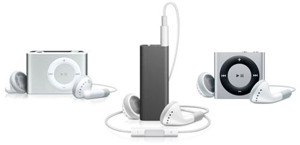

- 1st Generation
- 2nd Generation
- 3rd Generation

The iPod shuffle
The iPod Shuffle is a discontinued digital audio player designed and formerly marketed by Apple Inc.
It was the smallest model in Apple's iPod family, and was the first iPod to use flash memory.
The first model was announced at the Macworld Conference & Expo on January 11, 2005; the fourth- and final-generation models were introduced on September 1, 2010.
The iPod Shuffle was discontinued by Apple on July 27, 2017.